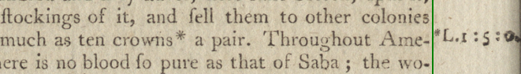
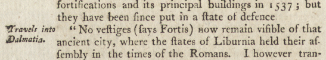
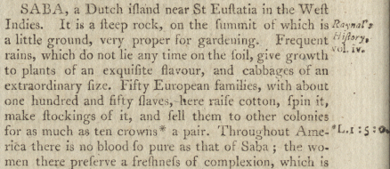
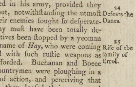

Both the third and seventh editions include marginal notes as well as footnotes. They
also includes numbered subheads in the margins that we do not include, so
be careful to differentiate them. The note text is always brief and is in the left or
right margin of the page. We want to capture this text, so please treat it similarly to
footnotes.
There are two types of marginal notes, anchored and unanchored, and they
receive slightly different treatments. Use the normal @@ and
@@@ codes for both, and then:
Add [m] following the @@@ code for an anchored
note, or [mu] if the note text is unanchored. We will remove it
later and add TEI encoding to indicate the position of the note in the margin.
Note:
marginal notes are usually short, often no more than one or
two words. Instead of drawing a separate box around it with the "footnote" function,
entering it by hand in the text pane may be quicker.
Anchored marginal notes
These are usually indicated in the text
with a symbol, in the sequence: *, †, ‡, §, ‖, ¶. The note is
positioned in the margin opposite the anchor, and it always begins with the anchor symbol.Figure 1. Anchored marginal note.

For the example above, the note text reads
@@@[m]*L.1:5:0.
Note:
Money. Instead of £, the pound sign for
British currency, eb03 typically uses L., as in the example above. They
used a sequence of three numbers divided by a colon to list amounts in pounds,
shillings, and pence. Thus, the note text means one-pound, five shillings, zero
pence.
Unanchored marginal notes
Bibliographic citations to a source
mentioned in the body text are often added in the margin without an anchor. Their
placement indicates the referent in the text. We want to include this information, since
it might supply information about where the writer found their material. Figure 2. 1. Unanchored marginal note

For the example above, place a @@ code after the word
"Fortis," and add the note text to the end of page, in sequence with the other notes.
The note text reads
@@@[mu]Travels into Dalmatia.
Figure 3. 2. Unanchored marginal note

This example shows what an unanchored note looks like when followed by an
anchored note. Where would the unanchored note go in the body text, when there is no
evident reference to an author? In this case, add the @@ at the end of
the sentence:
... very proper for gardening.@@ Frequent ...
Then insert the note text at the end of the page, in sequence:
@@@[mu]Raynal's History, vol. iv.
Marginal subheads
Long articles include subheads in the margins,
to direct readers to the paragraph topic. Figure 4. Marginal subheads

We do not include these in the edition, so you must learn to differentiate them
from the anchored and unanchored notes. Subheadings are easy to spot because they are
always numbered sequentially and they summarize the text. If you have any
question whether a marginal text should be included or not, please speak with the
supervisor.